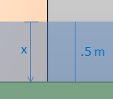
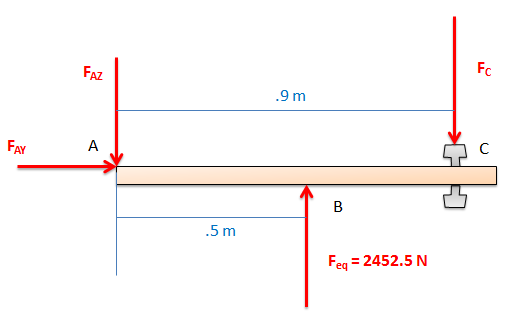
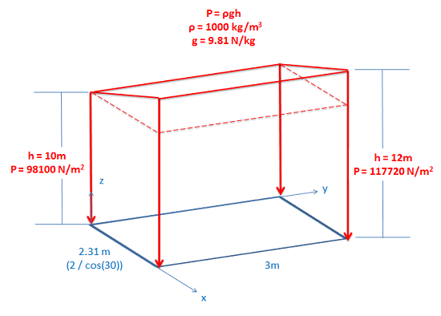
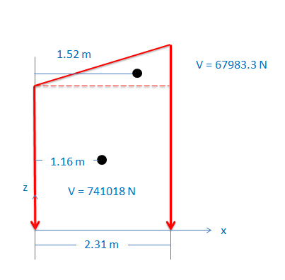
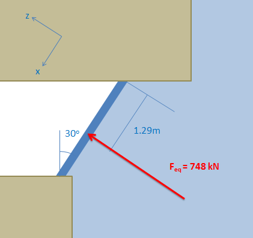

Hydrostatic Pressure on a Flat Surface
If a liquid is in contact with flat surface, it will exert a pressure on that surface. As discussed on the Hydrostatic Pressure page, this pressure will have a magnitude of /( \rho g h/), and will act in a direction normal to the surface it is in contact with.
In the diagram below we have water up against a flat surface (a dam in this case). The hydrostatic pressure of the water exerts a distributed force on the surface of the dam. For analysis it is often useful to convert this distributed force into it's equivalent point load.
Finding the Equivalent Point Load Using Integration:
In order to convert the distributed load into its equivalent point load, we will need to find the magnitude of the of the equivalent point load (\(\mathrm{F_{eq}}\)) and the point of application (\(\mathrm{x_{eq}}\) and \(\mathrm{y_{eq}}\)) of the equivalent point load.
\[ \mathrm{ F_{eq} = \int F(x, y) * dA }\]Since we know that the force doesn't vary with y (since the depth doesn't change along the y axis) and if there is a constant width in the y direction (w), we can simplify the formula to...
\[ \mathrm{ F_{eq} = w*\int F(x) * dx }\]Next we substitute in the fact that we know that P equals \( \mathrm{\rho g h}\)...
\[ \mathrm{ F_{eq} = w*\int \rho g h * dx }\]and we substitute in \( \mathrm{x*cos(\theta)}\) for h in order to get F(x) in terms of x...
\[ \mathrm{ F_{eq} = w*\int \rho g cos(\theta) * x * dx }\]Now we bring all of the constants outside of the integral, and we are left with...
\[ \mathrm{ F_{eq} = w \rho g cos(\theta)\int x * dx }\]Note that the above equation only works if the flat surface has a constant width (w).
For a rectangular plate such as this one, we can assume that the force will act along the center of the surface in the y direction, or \(\mathrm{y_{eq}}\) will be equal to w/2.
It is more complicated however to calculate \(\mathrm{x_{eq}}\), since the pressure varies with x.
Again taken from the Equivalent Point Load (Distributed) page, we get the formula below for \(\mathrm{x_{eq}}\).
\[ \mathrm{ x_{eq} = \frac{\int\left( x *F(x, y) * dA\right)}{F_{eq}} }\]Again, the above formula only works if the flat surface has a constant width in the y direction.
Since y does not vary, and since pressure does not vary along the y direction, we can move w outside of the integral.
\[ \mathrm{ x_{eq} = \frac{w*\int\left( x *F(x) * dx\right)}{F_{eq}} }\]Next we substitute in the fact that we know that P equals \( \mathrm{\rho g h}\) and we substitute in \( \mathrm{x*cos(\theta)}\) for h in order to get F(x) in terms of x...
\[ \mathrm{ x_{eq} = \frac{w*\int\left( x *\rho g cos(\theta)* x * dx\right)}{F_{eq}} }\]and finally we move all of the constants outside of the integral and we are left with...
\[ \mathrm{ x_{eq} = \frac{w\rho g cos(\theta)}{F_{eq}}* \int\left( x^2 * dx\right) }\]Again, the above formula only works if the flat surface has a constant width in the y direction.
Finding the Equivalent Point Load Using Volume and Center of Mass:
A shortcut to finding \(\mathrm{F_{eq}}\) , \(\mathrm{x_{eq}}\) and \(\mathrm{y_{eq}}\) is to create a volume with the base of equal to the flat surface the pressure is acting on, and a height equal to the magnitude of the pressure. If we use the example of a dam above, this volume will be a rectangular prism as shown below. The rectangle in the xy plane is the flat surface of the dam, and the pressure increases as the depth increases.
The magnitude of the equivalent point load (\(\mathrm{F_{eq}}\)) will be equal to the volume of this figure. It is also true that the equivalent point load will act through the center of mass of this volume (assuming it has a uniform density). Knowing that the equivalent point load acts normal to the surface it is acting on, we can use this to find \(\mathrm{x_{eq}}\) and \(\mathrm{y_{eq}}\) for the equivalent point load.
This method will only work for hydrostatic pressures working on flat surfaces, but the volumes and centers of masses of many solid are easy to look up in tables or on the internet and it will save you the trouble of solving integrals.
Worked Problems
Worked Problem 1:
A half a meter of water has built up against a water tight door at a costal research station. Knowing that the door opens outwards (against the water), what force will need to be applied at the doorknob to open the door?
| Work | Comments |
|
\[ \mathrm{
F_{eq} = w \rho g cos(\theta)\int x * dx
}\]
|
The first step here is to convert the hydrostatic force into an equivalent point load. Then the second step is to use the equations of static equilibrium to solve for the force needed to open the door. The water is pressing against a flat plate with a uniform width, so we can use the integral equation shown on the left to solve for the magnitude of the equivalent point load. |
|
\[ \mathrm{
F_{eq} = (1m)*(1000\frac{kg}{m^3})*(9.81\frac{N}{kg}) \int_0^.5 x * dx
}\]

|
Since the angle from vertical for the door is 0 degrees, cos(\(\mathrm{\theta}\)) turns into 1. Next we plug in values for the width of the door, the density of water and constant g. Finally we choose a direction x, which we set to be zero at the water's surface and increase as we go down. We will be integrating between zero (the surface of the water) and .5 (the bottom of the door). |
| \[ \mathrm{ F_{eq} = (9810 \frac{N}{m^2}) \bigg|_0^.5 x^2 }\] \[ \mathrm{ F_{eq} = (9810 \frac{N}{m^2})*((.5m)^2-(0m)^2) }\] \[ \mathrm{ F_{eq} = (9810 \frac{N}{m^2})*(.25m^2) }\] \[ \mathrm{ F_{eq} = 2452.5N }\] |
Then we simply solve the equation for the value of \(\mathrm{F_{eq}}\). |
|

|
In this step we drew out the free body diagram of the door. We treat it like a 2D problem, looking down on the top of the door. We have assumed that the equivalent point load is acting in the center of the door, since pressure is uniform along the Y axis. |
| \[ \mathrm{ \sum{M_A} = 0 = (2452.5 \text{ N}* .5 \text{ m}) - (F_C \text{ N} * .9 \text{ m}) }\] |
If we write out the moment equation about point A, we find we are left with only one unknown, \(\mathrm{F_C}\) (the force on the doorknob we are looking to find). |
| \[ \mathrm{ F_C = \frac{2452.5*.5}{.9} }\] \[ \mathrm{ F_C = 1363 \text{ N} }\] |
We solve this equation and arrive at the solution we were looking for. |
Worked Problem 2:
A window for an underwater observation deck is shown. Knowing the window is 3 meters wide, determine the equivalent point load for the hydrostatic pressure acting on the window (both magnitude and point of application).
| Work | Comments |
|

|
Since the window is a flat surface, we can use volume and center of mass approach to solve for the equivalent point load. The first step is to draw out the volume represented by the flat surface as the base and the pressure as the height. |
|
\[ \mathrm{
F_{eq} = V = (98100 \frac{N}{m^2} * 2.31m * 3m) + (.5 * 19620\frac{N}{m^2} * 2.31m * 3m)
}\]
\[ \mathrm{
F_{eq} = 747816.3 \text{ N}
}\]
|
Next, to find \(\mathrm{F_{eq}}\), we find the volume of this shape. The volume here is simply a rectangular prism and a triangular prism connected together. We solve for the volume and find \(\mathrm{F_{eq}}\). |
|
\[ \mathrm{
y_{eq} = 1.5 \text{ m}
}\]
|
For the y position of the center of mass, we can see that the figure is uniform along the y axis and therefore the center of mass will act in the middle of the volume along the y axis. This means that \(\mathrm{y_{eq}}\) is 1.5 meters. |
|

|
To solve for the x position of the center of mass, we use composite parts. We break the figure down into the rectangular prism and the triangular prism as shown in the drawing on the left. Next we identify the volume and center of mass of each. |
|
\[ \mathrm{
x_{eq} = \overline{X} = \frac{\sum{(V\overline{x}})}{\sum{V}}
}\]
\[ \mathrm{
x_{eq} = \frac{(741018*1.16)+(67083.3*1.52)}{747816.3}
}\]
\[ \mathrm{
x_{eq} = 1.29 \text{ m}
}\]
|
In this step we write out the equation to solve for the center of mass of the composite body. Then we solve for the x position of the center of mass, and we know that this is \(\mathrm{x_{eq}}\) for the equivalent point load. |
|

|
Finally, we draw in the final solution on the original diagram. |
 |
| Author: Jacob Moore has liscenced this work under a Creative Commons Attribution-NonCommercial 3.0 Unported License. |